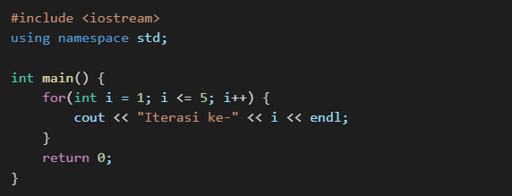

1. Pengertian Looping
ooping (perulangan) dalam C++ digunakan untuk mengeksekusi sebuah blok kode secara berulang-ulang selama kondisi tertentu masih terpenuhi. Looping sangat berguna untuk mengurangi kode yang berulang dan meningkatkan efisiensi program.
2. Jenis - Jenis Looping dalam C++
Ada 3 jenis looping yaitu:
- For loop
- While loop
- Do-while loop
a. For Loop
For loop digunakan ketika jumlah iterasi sudah diketahui sebelumnya.
Sintaks:
Contoh:
b. While Loop
While loop digunakan ketika jumlah iterasi belum diketahui pasti,
tetapi berdasarkan suatu kondisi yang diberikan.
Sintaks:
Contoh:

c. Do-While Loop
Do-While loop mirip dengan while loop, tetapi memastikan bahwa blok kode dieksekusi
minimal satu kali, meskipun kondisi awal tidak terpenuhi.
Sintaks:
Contoh:
3. Perbedaan dan Penggunaan
| Jenis Loop | Kondisi Diperiksa | Eksekusi Minimal |
|---|---|---|
| For loop | Sebelum iterasi | Bisa 0 kali |
| While loop | Sebelum iterasi | Bisa 0 kali |
| Do-While loop | Setelah iterasi | Minimal 1 kali |